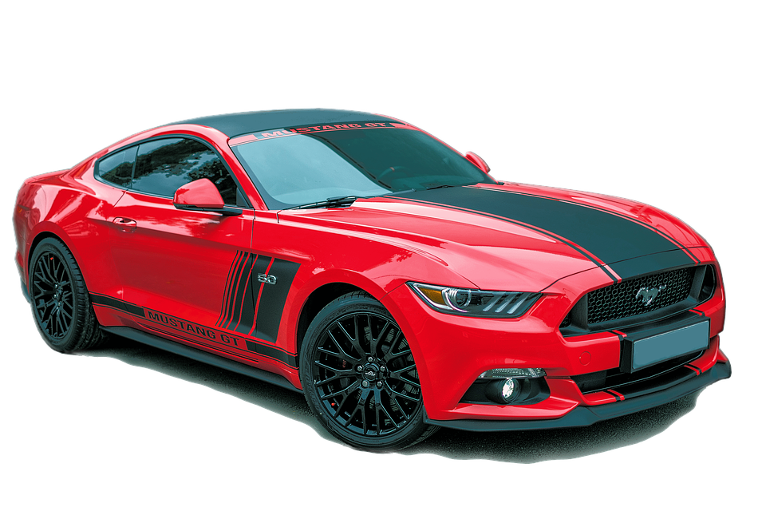

Объявление о продаже – визитная карточка вашего автомобиля. Чем лучше вы его составите, тем быстрее он найдет своего нового владельца. Как не допускать ошибок и создать эффективное объявление?
Успех продажи автомобиля напрямую зависит от того, как составлено объявление и что в нём указано. На привлечение внимания влияет цена предложения и то, как машина выглядит – её фотографии. Но информация об автомобиле и её подача также имеют значение.
Составляя текст объявления, помните, что самый правильный подход к его подготовке – честность и детальность описания автомобиля. Многие сайты предлагают стандартные формы заполнения, какие-то более подробные, какие-то – менее. На am.ru, например, очень подробная форма, которая позволяет составить полное описание машины. Но оно стандартно для всех, а вот поле для комментариев заполняется индивидуально, носит более эмоциональную окраску и создаёт образ автомобиля и его владельца.
